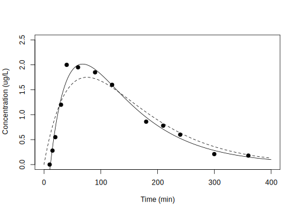

1 PK
wnl 라이브러리를 불러오고 자료를 읽어옵니다.
## Loading required package: numDeriv먼저 NCA 분석을 해 봅니다.
## b0 CMAX CMAXD TMAX TLAG
## 1.557534e+00 2.000000e+00 2.000000e-02 4.000000e+01 1.000000e+01
## CLST CLSTP TLST LAMZHL LAMZ
## 1.800000e-01 1.647689e-01 3.600000e+02 7.424929e+01 9.335405e-03
## LAMZLL LAMZUL LAMZNPT CORRXY R2
## 9.000000e+01 3.600000e+02 7.000000e+00 -9.822141e-01 9.647446e-01
## R2ADJ AUCLST AUCALL AUCIFO AUCIFOD
## 9.576935e-01 3.308750e+02 3.308750e+02 3.501564e+02 3.501564e+00
## AUCIFP AUCIFPD AUCPEO AUCPEP AUMCLST
## 3.485249e+02 3.485249e+00 5.506520e+00 5.064170e+00 4.230750e+04
## AUMCIFO AUMCIFP AUMCPEO AUMCPEP VZFO
## 5.131423e+04 5.055210e+04 1.755210e+01 1.630912e+01 3.059178e+01
## VZFP CLFO CLFP MRTEVLST MRTEVIFO
## 3.073499e+01 2.855866e-01 2.869236e-01 1.278655e+02 1.465466e+02
## MRTEVIFP
## 1.450459e+02
## attr(,"units")
## [1] "" "ug/L" "ug/L/ug" "min" "min"
## [6] "ug/L" "ug/L" "min" "min" "/min"
## [11] "min" "min" "" "" ""
## [16] "" "min*ug/L" "min*ug/L" "min*ug/L" "min*ug/L/ug"
## [21] "min*ug/L" "min*ug/L/ug" "%" "%" "min2*ug/L"
## [26] "min2*ug/L" "min2*ug/L" "%" "%" "L"
## [31] "L" "L/min" "L/min" "min" "min"
## [36] "min"
## attr(,"UsedPoints")
## [1] 7 8 9 10 11 12 131.1 PK1
경구 투여 일구획 분석, 지연시간이 없는 모형
DOSE = 100
fPK02a = function(THETA) # Prediction function
{
Ka = THETA[1]
V = THETA[2]
K = THETA[3]
Cp = DOSE/V*Ka/(Ka - K)*(exp(-K*TIME) - exp(-Ka*TIME)) # eq 2:1
return(Cp)
}
TIME = dPK02[,"TIME"]
r1 = nlr(fPK02a, dPK02, pNames=c("ka", "V", "k"), IE=c(0.1, 30, 0.05)) ; r1## $Est
## ka V k AddErrVar AddErrSD
## PE 0.013202142 21.017659 0.013202008 0.08701446 0.29498213
## SE 0.005442004 8.623411 0.005441954 0.03412981 0.05785063
## RSE 41.220611647 41.029360 41.220651532 39.22314350 19.61157175
##
## $Cov
## ka V k AddErrVar
## ka 2.961540e-05 4.495113e-02 -2.716297e-05 7.006037e-10
## V 4.495113e-02 7.436322e+01 -4.543926e-02 1.609271e-06
## k -2.716297e-05 -4.543926e-02 2.961486e-05 -1.099428e-09
## AddErrVar 7.006037e-10 1.609271e-06 -1.099428e-09 1.164844e-03
##
## $run
## $run$m
## [1] 4
##
## $run$n
## [1] 9
##
## $run$run
## [1] 3
##
## $run$p.value
## [1] 0.01818182
##
##
## $`Objective Function Value`
## [1] -18.74183
##
## $`-2LL`
## [1] 5.150577
##
## $AIC
## [1] 13.15058
##
## $AICc
## [1] 18.15058
##
## $BIC
## [1] 15.41037
##
## $Convergence
## NULL
##
## $Message
## [1] "CONVERGENCE: REL_REDUCTION_OF_F <= FACTR*EPSMCH"
##
## $Prediction
## [1] 0.5504580 0.7729431 0.9647578 1.2681589 1.4817554 1.7068526 1.7229776
## [8] 1.5460044 1.0502355 0.8245668 0.6341765 0.3590086 0.1951061
##
## $Residual
## [1] -0.55045799 -0.49294305 -0.41475779 -0.06815889 0.51824458
## [6] 0.24314740 0.12702241 0.05399564 -0.19023546 -0.04456675
## [11] -0.03417646 -0.14900858 -0.01510607
##
## $`Elapsed Time`
## Time difference of 0.01595688 secs1.2 PK2
경구 투여 일구획 분석, 지연시간이 있는 모형
fPK02b = function(THETA) # Prediction function
{
Ka = THETA[1]
V = THETA[2]
K = THETA[3]
tlag = THETA[4]
Cp = DOSE/V*Ka/(Ka - K)*(exp(-K*(TIME - tlag)) - exp(-Ka*(TIME - tlag))) # eq 2:2
return(Cp)
}
TIME = dPK02[,"TIME"]
r2 = nlr(fPK02b, dPK02, pNames=c("ka", "V", "k", "tlag"), IE=c(0.1, 30, 0.05, 20)) 1.3 PK3
지연 시간이 있는 모형의 적합이 더 좋은 것을 알 수 있습니다. Cmax 부분을 주의깊게 살펴보세요.
# Figure 2.3, p 480
plot(dPK02[,"TIME"], dPK02[,"DV"], xlim=c(0, 400), ylim=c(0, 2.5),
xlab="Time (min)", ylab="Concentration (ug/L)", pch=16)
TIME = 0:400
lines(TIME, fPK02a(r1$Est["PE", 1:3]), lty=2)
lines(TIME, fPK02b(r2$Est["PE", 1:4]))